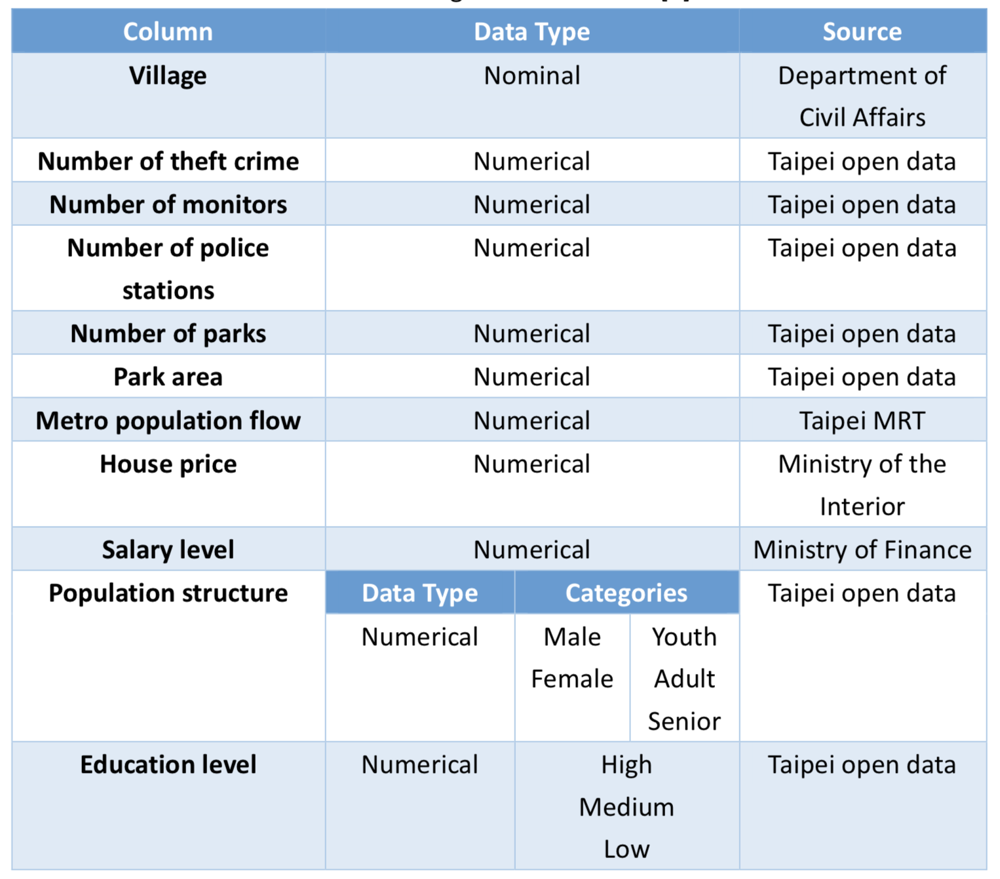
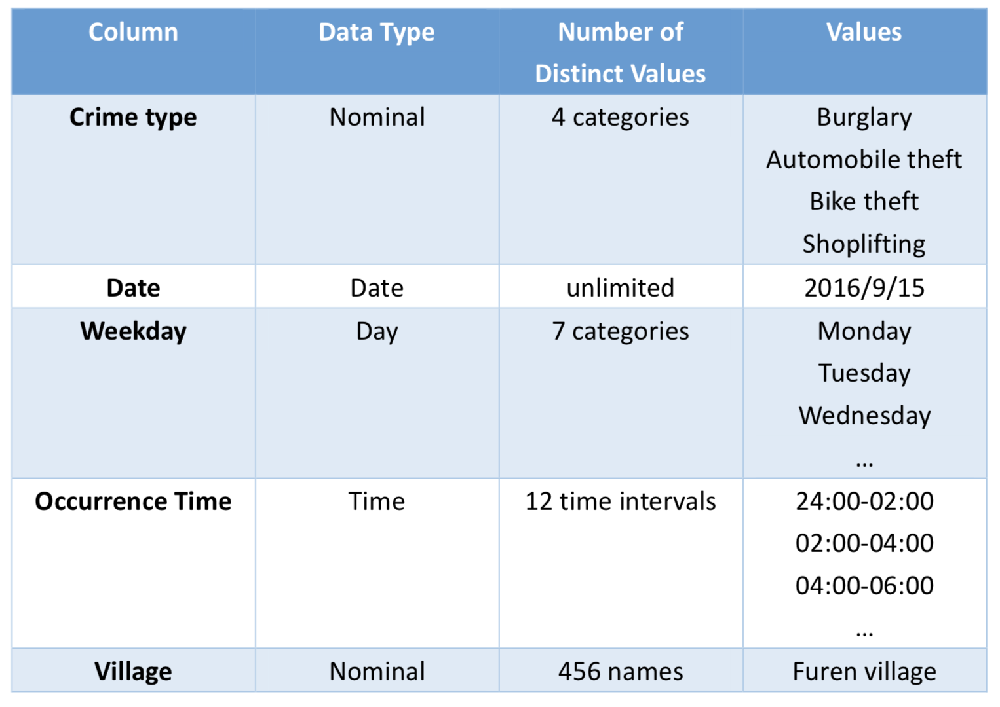
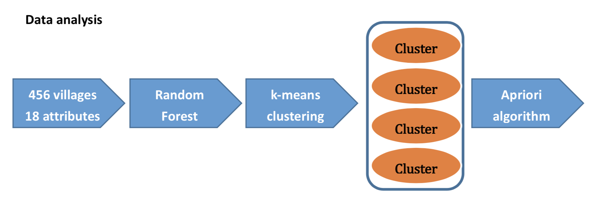
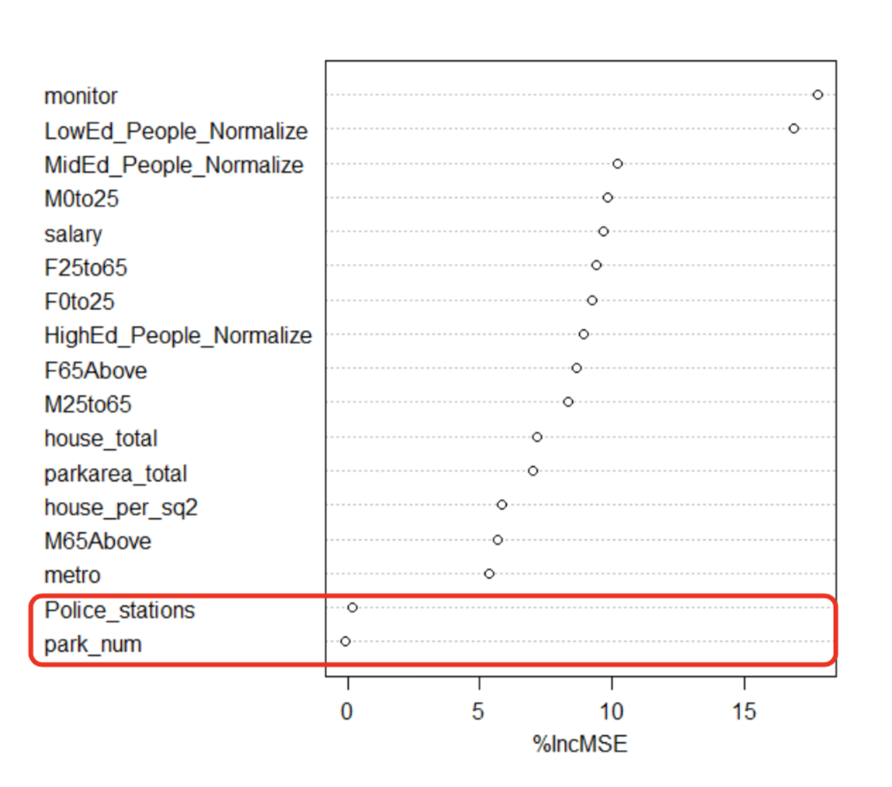
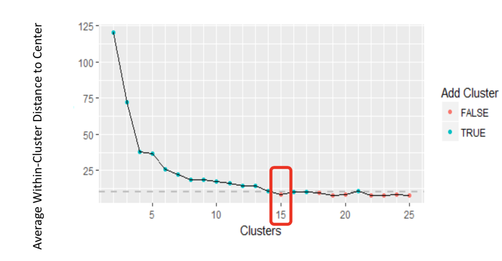
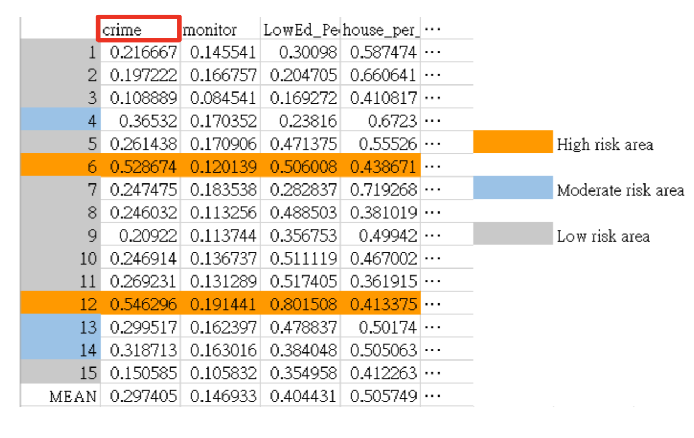
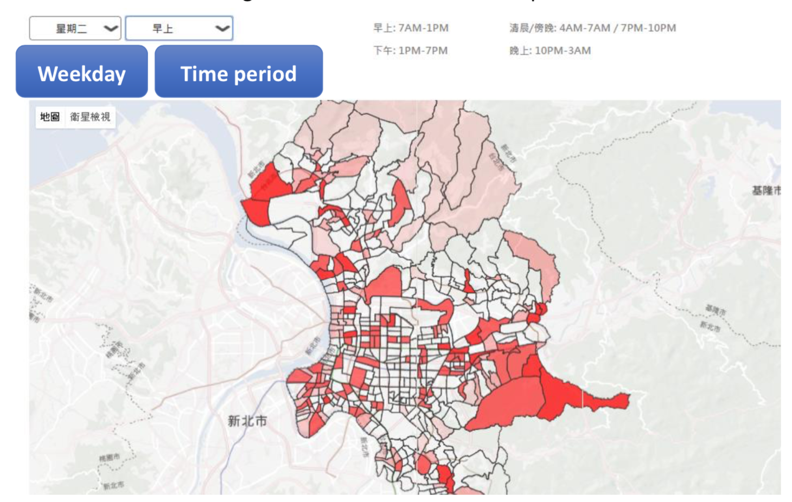

Data analysis can be applied to several business situations, such as e-commerce, retailing and advertising. However, despite those commercial values we hope to conduct a report that is closely related to our daily life. Thus, Maslow's Hierarchy of Needs came to our mind --- one of the basic needs of the theory for living is safety.
Crime can cause social unrest and make us in fear and it is also the most common social problem affecting the quality of life and the economic growth of a society. Reducing crime is one of the efforts that are being taken seriously by the Taiwanese Government.
This study aims to find the spatial and temporal theft hotspots in Taipei city by analyzing real-world theft datasets through a statistical analysis and the utility of hotspot mapping.
Let's take a look at the dataset
To construct our data mining model, we mainly focused on two tables. Our study is based on the theft crime in Taipei city, and we hope to find patterns of the occurrence time for a specific location. To begin with, we collected several environmental factors that corresponded to each village in Taipei. As indicated in Table 1, we classified the villages into different cluster based on those environmental factors before we conducted the Apriori algorithm. This step was taken to reduce the noise and to avoid excessive rules.
 Table 1. Village attributes tableAs for the Apriori analysis, we focused on the Taipei city theft crime from previous two years to current year (2015/1-2017/2). The dataset information is based on the Taipei Open Data. The original dataset gives the exact occurrence time of the crime along with the address. We extracted the village from the address and corresponded each theft crime to the village. Furthermore, we also transformed the exact occurrence time to a two hour time interval. The following table shows the crime attributes and its content values (Table 2).
 Table 2. Crime attributes tableMethodology
In this section, we explain how we prepared our datasets. After that, we provide how we analyzed the data using some statistical analysis. Then, we introduce how we constructed our data-mining models to achieve our purpose.
 Workflow of the crime predictionData preprocessing There are few missing values in some attributes such as house price or education level of some villages. We compared to the nearby village and calculated the average value to fill in the blank. Moreover, we eliminated the outliers to maintain the objectivity of the analysis. F inally, we normalized every numerical value before constructing the data mining model. We also found out that some village names appeared in different character written in the tables, we performed several steps to unify the village names and key attributes.
Data analysis In the dataset, we have 456 villages and 18 features. Before conducting the clustering, we performed Random forest to select the importance features.
For each attribute in the model we permuted the attribute and calculated new model MSE according to variable permutation, then we collected the results in a list and ranked attributes’ importance according to the value of the percentage of increasing mean squared error (%IncMSE). The greater the value the better it is.
 Attribute importanceWe decided to remove number of police stations and number of parks since %IncMSE is approximately close to zero and continued the other 16 attributes to K-means clustering.
Mentioned above that in this dataset we have 456 villages, which is a lot. To avoid excessive disorganized rules while implementing the Apriori algorithm, we grouped the village with similar environmental factors in the same cluster using K-means clustering.
To find the numbers of clusters in the data, we compared the mean distance between data points and their cluster centers across different values of K. This method is plotted in the figure below and the “elbow point” is where the rate of decrease shifts, that can be used to roughly determine K.
 The ideal number of clusterHence, we run the k-means clustering setting K=15, and calculated the average number of theft crime. The number of villages of each cluster falls between 19 and 52, and two clusters have much higher theft crime than the others. Thus, we examined the k-means clustering centers for each cluster and all their attributes (See figure below), each value represents the center value of the attribute for its corresponding cluster and the value scores from 0 to 1, since we conducted the normalized formula in the data preprocessing section.
We also found out that crime attribute (number of theft crime) in cluster 6 and cluster 12 have far exceeded other cluster, hence we classified those two cluster into high risk area, for those whose crime attribute is higher than average value, we categorized them into moderate risk area and the rest of the clusters are referred to the low risk area. By comparing other attributes of the high-risk area, we also found out that those villages tend to have less surveillance monitors, higher rate of lower-educated people and lower house price.
 k-means clustering centersApriori algorithm
Apriori algorithm has its support value, confidence value and lift. The higher the confidence value, the stronger the rule. Lift value shows that the existence of the rule is not just a random occurrence while it is bigger than 1. We implemented this model using Table 2 and conducted multiple experiments using different minimum support values, then we selected the optimal choice. Furthermore, we also applied constraint-based mining by restricting the extraction process on the frequent patterns having this formula of three specific itemsets (Weekday, Time period and cluster). Finally, the minimum support value for our datasets was 0.001 and we obtained 188 absolute frequencies after the filtering criteria.
Result
The goal of our study was finding spatial and temporal criminal hotspots. We achieved this goal by conducting the Apriori algorithm. Table 3 indicates that the occurrence rate of the theft crime in a specific time of each cluster. For example, there’s a 9.57% chance of threat for the villages in cluster 1 to occur the theft crime in Friday morning.
| Time | Cluster1 | Cluster2 | Cluster3 | ... | Cluster15 |
|---|---|---|---|---|---|
| Weekly=Friday, TimePeriod=Afternoon | 0 | 0 | 0.04 | ... | 0 |
| Weekly=Friday, TimePeriod=Morning | 0.096 | 0.06 | 0 | ... | 0.05 |
| Weekly=Friday, TimePeriod=Night | 0 | 0.06 | 0 | ... | 0.05 |
After obtaining the threat of each cluster in different time period, we visualized our results using Google Maps. With two pull-down menu on the top, users can choose the day and the time period easily, then the map will show the corresponding color. While the brighter the color is, the higher probability will the theft crime take place.
 Visualization for crime predictionLike to check out more details? Please click the button below
Go back Home